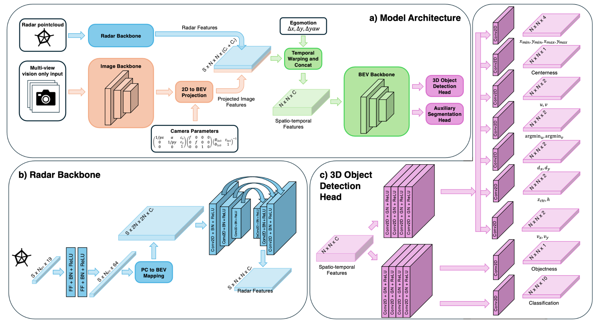
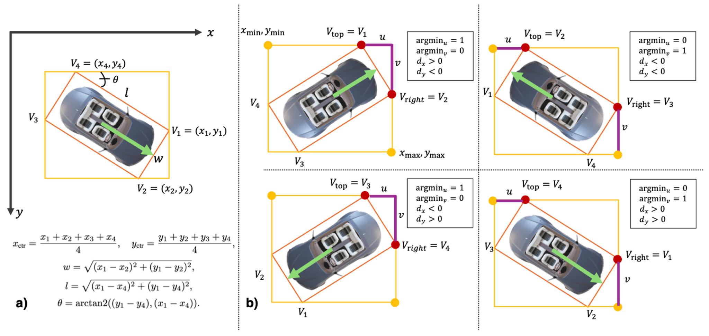

RQR3D: Reparametrizing the Regression Targets for BEV-based 3D Object Detection
A restricted quadrilateral representation for BEV-based 3D object detection that replaces discontinuity-prone angle regression with horizontal-box and keypoint-style targets, paired with an efficient camera-radar fusion architecture.

RQR3D combines multi-view image features, a lightweight radar backbone, temporal BEV feature warping, a BEV backbone, and task-specific detection and segmentation heads.
Abstract
Accurate, fast, and reliable 3D perception is essential for autonomous driving. BEV-based 3D perception offers strong spatial understanding and planner-friendly outputs, yet existing methods typically rely on angle-based representations that can suffer from discontinuities and learning instability. RQR3D introduces Restricted Quadrilateral Representation, which regresses the smallest horizontal bounding box around an oriented box and the offsets between the corners of these boxes. This turns oriented 3D object detection into a keypoint regression problem while preserving rectangular cuboid geometry.
The method is integrated into an anchor-free, single-stage detector and paired with a simplified radar fusion backbone using standard 2D convolutions over BEV-mapped radar features. On nuScenes, RQR3D reaches strong camera-radar 3D object detection performance, including 67.5 NDS and 59.7 mAP on the test set with reduced translation and orientation errors.
Restricted Quadrilateral Representation

RQR3D represents an oriented BEV box using the smallest enclosing horizontal box plus the shortest offsets from the topmost and rightmost oriented-box corners. Additional targets resolve the 180-degree ambiguity.
1. Enclose the oriented box
For the BEV bottom face, RQR3D first finds the smallest axis-aligned box defined by xmin, ymin, xmax, ymax.
2. Regress offsets
It regresses u and v, the shortest offsets between the horizontal box and the topmost/rightmost corners, together with their binary argmin indices.
3. Resolve orientation
The auxiliary dx, dy targets encode the direction from the center of the V1V2 edge to the box center, recovering the full orientation.
Method Highlights
Anchor-free 3D detection head
The detector adapts FCOS to BEV-based 3D detection, predicting horizontal-box distances, RQR3D keypoint targets, centerness, objectness, class logits, height, depth, and velocity.
Objectness for class imbalance
An auxiliary objectness head separates foreground and background pixels, allowing localization-related losses to be learned even when the exact class label is difficult.
Lightweight radar backbone
Radar points are projected into a higher-dimensional feature space, mapped directly onto a BEV grid, and processed with dense 2D convolutions instead of sparse-convolution or voxel-grouping pipelines.
General detection representation
The representation is compatible with multiple detector families, including the FCOS-style one-stage head and a DETR3D-style transformer configuration.
nuScenes Results
with InternImage-B
with InternImage-B
with InternImage-B
with 7 temporal frames
| Setting | Method | NDS | mAP | mATE | mAOE |
|---|---|---|---|---|---|
| Test, C+R, ConvNeXt-B | RQR3D | 66.6 | 59.2 | 0.361 | 0.341 |
| Test, C+R, InternImage-B | RQR3D | 67.5 | 59.7 | 0.356 | 0.298 |
| Single frame, 704×256, R50 | RQR3D | 53.9 | 44.0 | 0.497 | 0.453 |
| Transformer variant, C+R | RQR3D | 51.1 | 42.0 | — | — |
BibTeX
@article{kilinctarhan2025rqr3d,
title={RQR3D: Reparametrizing the regression targets for BEV-based 3D object detection},
author={Kilinc, Ozsel and Tarhan, Cem},
journal={arXiv preprint arXiv:2505.17732},
year={2025},
url={https://arxiv.org/abs/2505.17732}
}